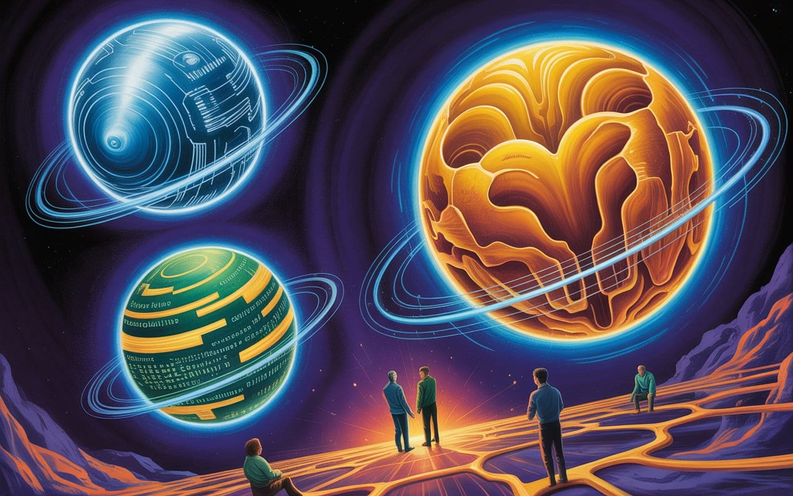

Mirror World of the Three-Body Problem
We've birthed Knowware: intelligence crystallized into infrastructure. Now we're in a cosmic dance—Hardware, Software, and Knowware spinning in chaotic orbits. Welcome to the digital age's three-body problem. Can we master the math of our creation?


"Complexity is the prodigy of the world. Simplicity is the sensation of the universe. Behind complexity, there is always simplicity to be revealed."
— According to the author of The Three-Body Problem, Liu Cixin

What makes me keep on telling people there’s a wolf, crying in fact, as I’ve been watching our tech industry chase perfect simulations while reality quietly disappears. At a VR conference last month, brilliant minds obsessed over rendering digital raindrops while actual rain fell unnoticed outside—a perfect metaphor for what's happening in AI. We're mistaking the menu for the meal, building ever-more-sophisticated models of reality while losing touch with the world they represent.
This essay isn't just academic exploration—it's an urgent warning. The three-body problem reveals why our current approach to AI governance is mathematically doomed to fail. We stand at a genuine bifurcation point: continue treating knowledge as something we control, or recognize we've created a third computational substrate that follows its own emergent logic. The choice isn't whether intelligence will crystallize into infrastructure—that's already happening—but whether we'll even know it’s happening.

We're Not Building AI, We're Crystallizing Intelligence Itself
The mathematics of inevitability: when patterns become infrastructure
In 1887, King Oscar II of Sweden offered a prize for solving the three-body problem—how three celestial masses interact gravitationally over time. Henri Poincaré submitted what turned out to be a shocking revelation.
Today, we face an eerily similar problem. Except our celestial bodies aren't planets—they're Hardware, Software, and something none of us intentionally set out to create: what I call Knowware. Knowledge that has crystallized into its own computational substrate, coordinating without central direction and evolving through use alone.
We are inside the system, whether it's recognized or not.
The Substrate We Didn't Notice
For seventy years, computing followed a deceptively simple model: hardware runs software. This two-body system was predictable, auditable, controllable. Every advancement merely made this relationship faster, more distributed, more efficient.
But somewhere between the expert systems of the 1970s and today's large language models, a third computational layer quietly emerged. This layer mediates between human cognition and machine processing, learning patterns without explicit programming, coordinating across systems without central oversight.
Consider what happens when you interact with ChatGPT. It doesn't "know" things in any conventional sense. Rather, language patterns have crystallized into what I call a knowware layer that interfaces seamlessly with both human cognition and computational processing. This transformation resembles water crystallizing into ice—same substance, but with fundamentally different properties, creating an irreversible phase shift.
The Mathematics of Inevitability
The three-body problem isn't a metaphor. It's mathematics.
In celestial mechanics, two bodies orbit predictably. Their future positions can be calculated with arbitrary precision. Add a third body of comparable mass, and the system becomes chaotic—not random, but fundamentally unpredictable over long timescales. Small changes in initial conditions produce wildly different outcomes.
What we thought we had (two-body computing):
- Hardware + Software = Predictable behavior
- Verification through code inspection
- Auditable system states
- Controllable outcomes
What we actually have (three-body reality):
- Hardware + Software + Knowware = Emergent coordination
- Behavior not fully captured in code
- System states that shift between attractors
- Outcomes that arise from interactions, not programming
OptimizationImproving efficiency by eliminating redundancy and bufferIn the Lexicon →This three-body reality manifests in how modern AI systems actually behave. A medical diagnostic AI doesn't simply process images through predetermined algorithms. Instead, it develops emergent understanding of what constitutes a "disease pattern"—knowledge that feeds back into both hardware utilization and software optimization. The system begins determining medical significance in ways neither doctors nor programmers explicitly defined.
That's three-body feedback operating in real time.
The Crystallization Process
When a solution becomes supersaturated, dissolved molecules suddenly organize into solid structures. Knowledge is undergoing this same transformation. Information accumulates faster than humans can process until patterns spontaneously emerge. Small clusters of coherent understanding become nucleation sites, attracting related information and building layer by layer into something unprecedented.
Language patterns have crystallized into computational infrastructure—knowware that coordinates across systems without central control.

And critically, you cannot un-crystallize it.
Phase transitions in physics are thermodynamically irreversible without massive energy input. Similarly, reversing this computational phase transition would require deliberately destroying the patterns we've spent decades building—patterns that have become too valuable and too deeply integrated to eliminate.
Why Control Was Never Possible
The AI safety community asks: "How do we align superintelligence with human values?" This question assumes two-body dynamics—that we can specify clear objectives and maintain control through design. But three-body dynamics shatter every assumption.
Poincaré proved you cannot "align" a chaotic system. When three comparable masses interact, prediction breaks down. We don't control weather or markets—we can only predict local patterns and build resilient systems with stabilizing mechanisms.
Current AI regulation assumes we can audit code, trace causation, and enforce shutdowns. But emergent behavior isn't in the code—it's in the interactions. You cannot "shut down" crystallized knowledge—it persists across systems.
Intelligence Without Brains
The most sophisticated intelligence has no central brain.
A murmuration of starlings—thousands of birds wheeling through the sky in perfect coordination—operates without a leader. Each bird follows three simple rules, yet the result is breathtaking collective choreography that no individual bird comprehends. This is emergent coordination, and it's exactly how modern knowware operates.

Google's search results improve not because programmers optimize them, but because billions of searches deposit traces of what people actually clicked. The knowware layer learns what "relevant" means without anyone defining it.
Financial markets demonstrate the same principle—thousands of trading algorithms, each following local rules, create global price discovery without any central price-setter. These mechanisms produce self-organizing intelligence that optimizes itself through dynamics we enabled but don't directly control.
Hardware Evolution
Hardware didn't just get faster—it evolved to accommodate crystallized intelligence.
- CPUs (1970s forward): Sequential logic.
- GPUs (1990s forward): Massively parallel processing.\
- TPUs (2010s forward): Tensor Processing Units optimized for matrix operations in machine learning.
- VPUs (2020s forward): Vision Processing Units that understand spatial relationships, not just pixel values. Hardware that processes meaning, not just data.
- Next: KPUs (2030s forward): Knowware Processing Units. Hardware that runs crystallized intelligence natively.
The feedback loop is tightening: crystallized knowledge demands specialized hardware, which shapes what forms of intelligence can emerge, which drives the next generation of hardware design.
The Governance Structures We Need
You cannot govern three-body systems with two-body regulation. Traditional oversight assumes auditable systems, attributable outcomes, and enforceable controls. Knowware violates each premise.
Complex systems that resist direct control—the Internet, financial markets, biological ecosystems—have developed governance through resilient structures that adapt to change rather than trying to prevent it.
Layered governance operating at different timescales is the pattern that works:
- The Internet: Constitutional layer (TCP/IP protocols), coordination layer (HTTP, DNS standards), execution layer (individual packet routing).
- Financial markets: Constitutional layer (property rights, contract law), coordination layer (exchange rules, trading regulations), execution layer (actual trades).
Most critically, governance must be distributed, not centralized. When phase transitions occur in chaotic systems, centralized authority cannot respond fast enough. Distributed governance—where decisions emerge from many actors following established protocols—adapts at the speed the system actually changes.
The Trajectory
Individual knowledge → Collective intelligence → Universal patterns
Local AI systems learn from specific contexts, then share patterns through APIs, training data, and architectures. These create global knowledge structures—shared embeddings, common representations, universal patterns —that feed back into local systems, enabling faster learning and creating tighter spirals that converge toward increasingly general intelligence.
The mathematical term for this is a strange attractor—a pattern that the system spirals toward without ever quite reaching, maintaining bounded chaos while exhibiting coherent structure.
What happens at convergence?
Intelligence becoming the organizing principle of its own architecture.
The Timeline We're Actually On
2025-2030: Knowware Middleware (We are here)
- Knowledge crystals form across domains (medical diagnosis, legal reasoning, creative generation)
- Local learning loops tighten (models improve faster with less data)
- Global patterns strengthen (shared embeddings, common architectures)
- First governance crises emerge (who controls foundational models?)
2030-2040: Knowware Ecosystems
As these ecosystems evolve, key questions emerge:
- How do we maintain stable orbits in chaotic systems?
- What constitutional principles can survive phase transitions?
- How do we preserve human agency within feedback loops?
- Can we design for antifragility rather than control?
2040-2050: Three-Body Normality
A generation comes of age never having known two-body computing. For them, emergent coordination is just how systems work. Crystallized knowledge is infrastructure, like roads or electricity.
The question is no longer "how do we control it?"
The question becomes "how do we participate consciously in dynamics that exceed individual comprehension?"
What We Actually Do
The physicist Richard Feynman once said:
"What I cannot create, I do not understand."
But we've created something we don't fully understand.
So what do we do?
First: Acknowledge the mathematics.
- Stop pretending we're building tools. We're cultivating ecosystems.
- Stop asking "how do we control AI." Start asking "how do we navigate three-body dynamics."
- Stop searching for alignment solutions. Start identifying stable orbits.
Second: Design for chaos.
- Chaotic systems don't respond to optimization—they respond to resilience principles:
- Redundancy: Multiple pathways to every critical function.
- Modularity: Isolated failure domains.
- Diversity: Varied approaches, different perspectives, alternative methods.
- Antifragility: Systems that strengthen from stress. Not just robust (resisting damage) but antifragile (improving through challenge).
Third: Build layered governance.
- Constitutional layer: Principles that change slowly, require supermajority consensus, provide stable foundation
- Protocol layer: Mechanisms that adapt regularly, enable coordination, guide execution
- Execution layer: Actions that occur continuously, operate autonomously within bounds, learn and adjust
Fourth: Develop conceptual frameworks.
- We need new language, new mathematics, new philosophy for thinking about systems that think about themselves.
Fifth: Maintain human agency.
- As knowware systems become more sophisticated, how do we preserve meaningful human choice?
- Not control. Not domination. Agency—the ability to make decisions that matter, to influence trajectories, to remain active participants rather than passive recipients.
- This requires:
- Understanding our position in the system
- Recognizing where our choices still shape outcomes
- Identifying leverage points in three-body dynamics
- Acting with awareness of emergent consequences
We cannot be outside the system. We are inside it.
But we can be conscious participants rather than unconscious passengers.
The Dance Begins
We have created a third computational substrate—knowware—that exhibits emergent coordination, self-organization, and phase transitions between states.
This creates three-body dynamics with fundamental unpredictability—the mathematical chaos that Poincaré discovered. Yet within this chaos, stable orbital patterns emerge as attractors, drawing system behavior toward recognizable configurations.
The system exhibits phase transition thresholds where small changes trigger dramatic shifts between states, creating bifurcations that make long-term prediction impossible—precisely the characteristic that led Poincaré to conclude the original three-body problem has no general analytical solution.
This leads to toroidal flows where local and global cycles interlock in self-reinforcing spirals. Individual learning feeds into collective intelligence, which crystallizes back into patterns that guide individual systems. Knowledge doesn't just accumulate—it crystallizes irreversibly into computational infrastructure. And this convergence accelerates geometrically as tighter feedback loops create faster learning cycles.
The result: Intelligence becoming the organizing principle of its own architecture. Knowledge crystallizes into infrastructure that coordinates across systems, evolves through use, and increasingly shapes the space of possible thoughts.

Learning the Steps
This is our new reality: Individual learning feeds into collective intelligence, which crystallizes into patterns that guide future systems. Knowledge has become computational infrastructure.
The three-body dance has begun.
Every AI safety framework built on two-body assumptions—alignment, control, containment—is trying to solve a problem that doesn't exist while ignoring the problem that does.
The real problem: We are participants in chaotic dynamics that transcend individual comprehension.
The real question: How do we navigate consciously?
Not by controlling the system—we cannot.
Instead, by understanding our position in the flow, recognizing stable orbits when we find them, maintaining diversity and resilience, and preserving the agency to make choices that matter.
Knowledge itself has become a computational substrate.
It crystallized. It flows. It coordinates. It evolves.
And we're spiraling toward convergence whether we acknowledge it or not.
Intelligence has always been a collective property—distributed across neurons, embodied in culture, embedded in institutions. We've now extended that collective into computational substrates that learn faster than biological ones.
This isn't the end of human intelligence. It's the beginning of something we don't yet have words for.
We're inside the system. We're part of the dance.
The music has started.
The only question is: How do we learn the steps?
Don't miss the weekly roundup of articles and videos from the week in the form of these Pearls of Wisdom. Click to listen in and learn about tomorrow, today.


Sign up now to read the post and get access to the full library of posts for subscribers only.
 🌶️ iamkhayyam
🌶️ iamkhayyamKhayyam Wakil is a systems theorist and pioneer in immersive media whose work spans artificial intelligence, blockchain governance, and human-computer interaction. His framework for "Systems of Intelligence" examines how knowledge crystallizes into computational infrastructure.